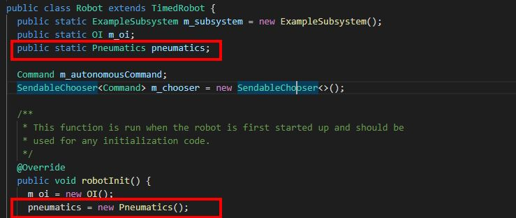

Overview
Subsystems represent a major component of the robot, such as the drivetrain, an arm, or a shooter. The methods (or functions) within a subsystem control specific motors.
In this section, you will create a subsytem and create motor controller/sensor objects. You will then create the methods that control these components.

Creating Subsystems
To create a subsystem, right click subsystems in the explorer and select Create a new class/command.
Select subsystem, and then name the subsystem appropriately.

After you have finished, you have created a subsystem.
In the example below, I created a "Elevator" subsystem.

Adding Motor Controllers/Sensors
Now that we have a subsystem, we will need to define the motor controllers and sensors.
In Java, you must first create the object.
There are two things you need to know:
How many motor controllers do you need to add? (A 4 motor drivetrain requires 4 motor controllers)
What type of motor controller is being used? (TalonSRX, VictorSPX, Sparks, etc.)
If you are using TalonSRX

Declaration - Place this under public class NAME extends Subsystem
private WPI_TalonSRX leftElevatorMotor;
Instantiate/Initializing (create an object)
The number corresponds to the CANId of the motor controller.
leftElevatorMotor = new WPI_TalonSRX(1);
If you are using VictorSPX

Declaration - Place this under public class NAME extends Subsystem
private WPI_VictorSPX leftElevatorMotor;
Instantiate/Initializing (create an object)
The number corresponds to the CANId of the motor controller.
leftElevatorMotor = new WPI_VictorSPX(1);
Creating Methods
A method is a function of the subsystem. For example, some functions of an elevator may be to lift to a certain height, lower, or to stop. To make an elevator stop, the example method is created to stop the elevator.
public void stopElevator(){
leftElevatorMotor.set(0.0);
}
This sets the elevator motor that we created earlier at 0 percent voltage.
Default Commands
Each subsystem can be assigned a default command. If a subsystem is not running anything, the default command will always be run.
When would you want this?
When you want something to always be running by default. For example, our drivetrain command always runs a DefaultDrive command that constantly checks to see if the joystick value has changed.
If you need to have a default command, add the following code to public void initDefaultCommand()
setDefaultCommand(new COMMANDNAME));